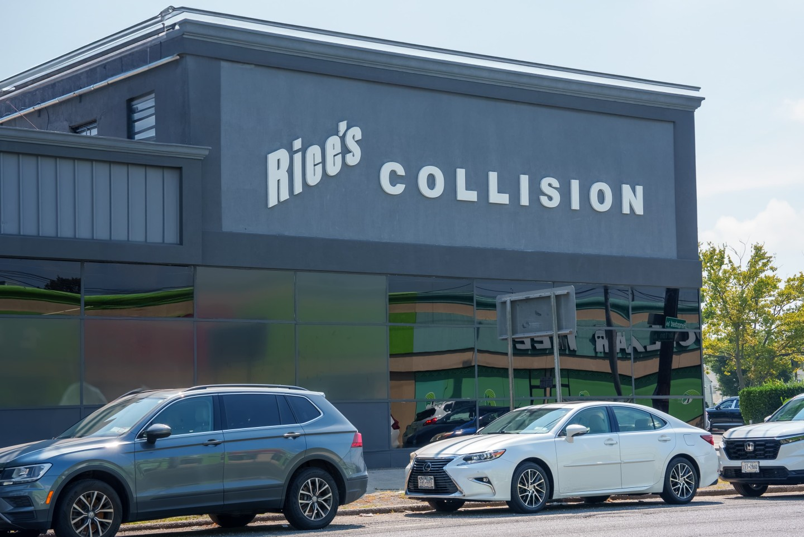

Show the shop behind the service.
Recognizable facility imagery and direct messaging give drivers a sense of who they are contacting.
Selected work / Automotive & Auto Body
Rice’s Collision — a clearer digital experience for drivers looking for a trusted local repair shop.

01 / The challenge
When a driver needs collision repair, the search starts with uncertainty. Who can help? What happens with insurance? How do I get an estimate?
Rice’s Collision needed a digital experience that made its West Hempstead shop easy to discover, its services easy to understand, and the next step easy to take.
Our direction: bring the real business forward and build confidence before the first conversation.
02 / The approach
Recognizable facility imagery and direct messaging give drivers a sense of who they are contacting.
Service, certification, insurance, and location information help people understand their options.
Call and estimate prompts belong beside the information that helps a driver choose the shop.
03 / The experience
A connected desktop and mobile experience brings service information, local credibility, and the estimate journey together.

04 / What the experience supports
Make auto body services easier to understand.
Connect the shop with West Hempstead searches.
Bring the facility and business information forward.
Give ready-to-act visitors a direct next step.
Performance results can be added here once verified reporting is available.
Your next chapter
Tell us where you are. We’ll help you see what comes next.
Let’s Talk About Your Project ↗